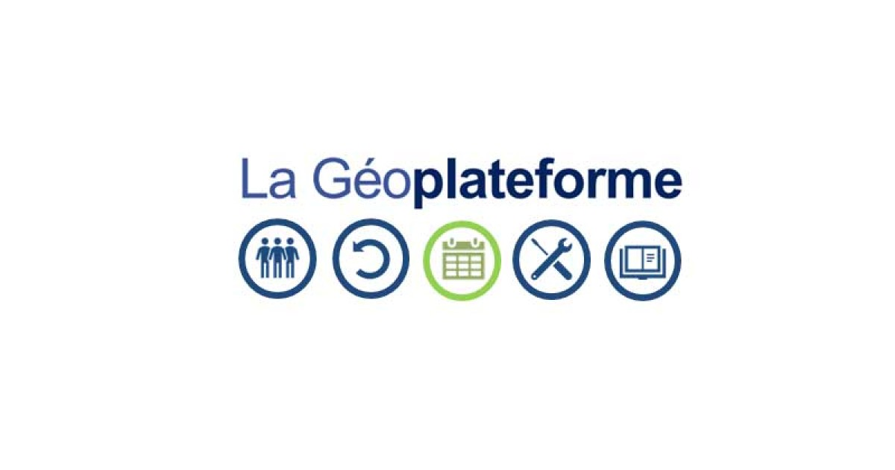

La Géoplateforme de l'IGN

🌍 Géoportail / Géoplateforme de l’IGN
Bienvenue sur la page de documentation simplifiée de la Géoplateforme de l’IGN.
Cette page présente les objectifs, les fonctionnalités principales et des exemples d’utilisation.
📌 1. Qu’est-ce que la Géoplateforme ?
La Géoplateforme est l’infrastructure nationale de diffusion des données géographiques en France.
Elle est développée et maintenue par l’IGN (Institut national de l'information géographique et forestière).
Elle permet :
- 📡 L’accès à des données géographiques officielles
- 🗺️ La visualisation de cartes interactives
- 🔌 L’intégration de services cartographiques via API
- 📂 Le téléchargement de jeux de données
🗺️ 2. Types de données disponibles
La plateforme propose différents types de données :
🛰️ Orthophotos
Images aériennes haute résolution.

🗺️ Cartes topographiques
Cartes détaillées avec relief, routes, bâtiments, etc.

🌊 Données altimétriques (MNT)
Modèles numériques de terrain (MNT) pour représenter le relief.

🔌 3. Services Web disponibles
La Géoplateforme fournit plusieurs services standards OGC :
| Service | Description |
|---|---|
| WMS | Service de visualisation d’images cartographiques |
| WMTS | Service tuilé pour affichage rapide |
| WFS | Service d’accès aux données vectorielles |
| API REST | Accès programmatique aux données |